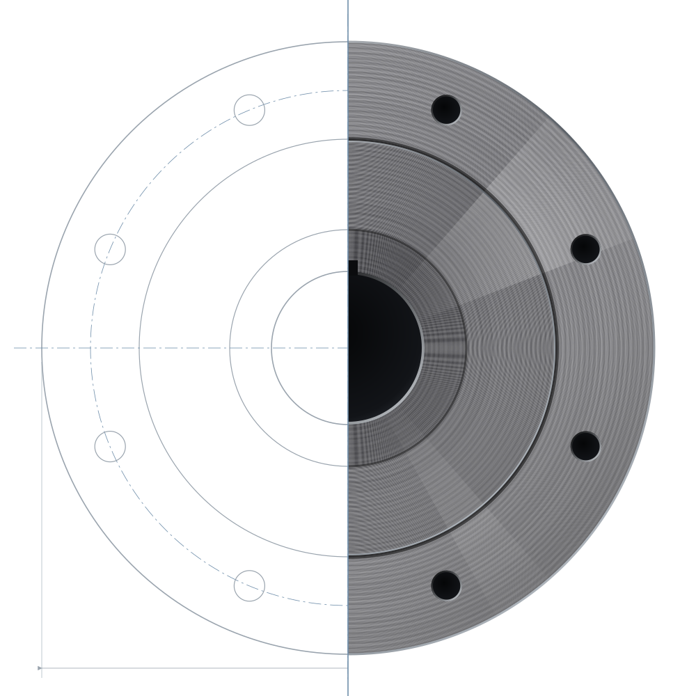
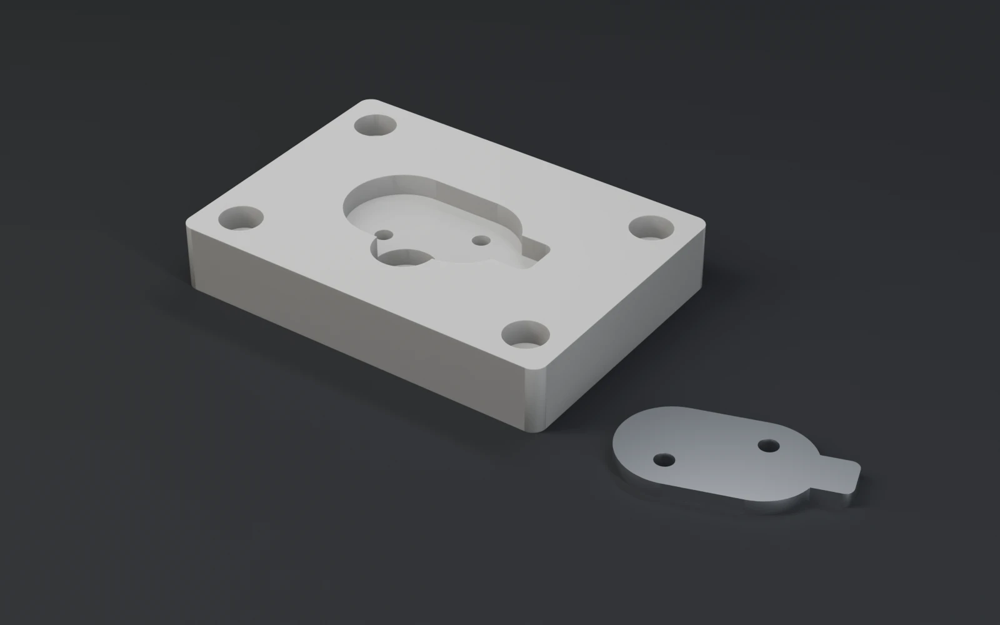
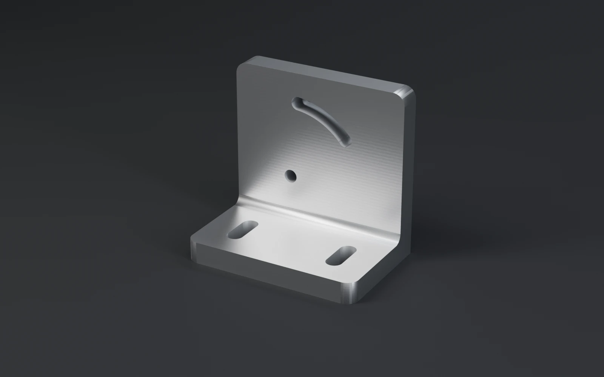
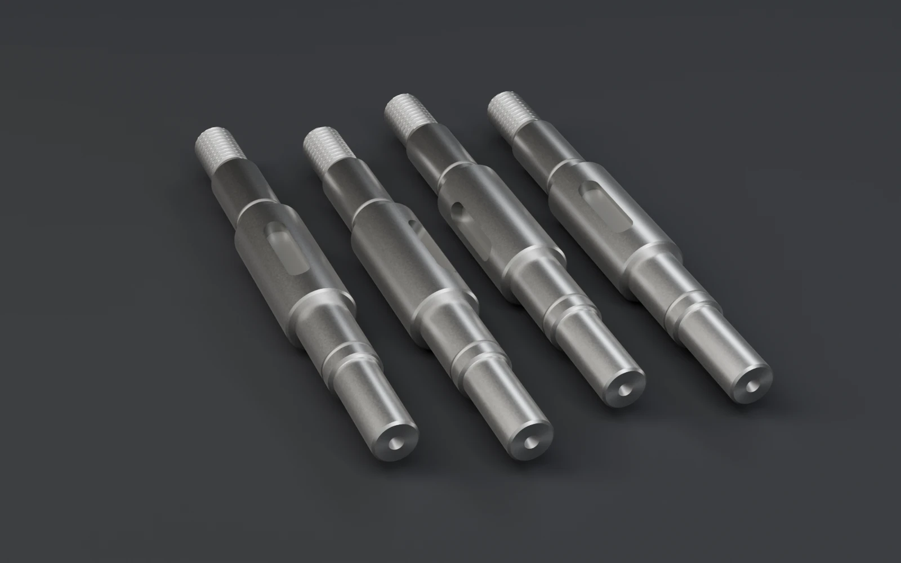

01中心となる強み
試作・小ロットへの
柔軟な対応
開発段階の試作品や、少量だけ必要な部品の加工をお引き受けします。設計変更が重なりやすい試作でも、変更点を確認しながら加工を進めます。
精密切削加工から、試作・小ロット生産まで。
ものづくりの課題に向き合い、
一つひとつの可能性を形にします。

試作・小ロットのご依頼も、
仕様検討の段階からのご相談も。
02Strength
少量の加工ほど、事前の仕様確認と、設計変更への対応が仕上がりを左右します。
汐見精工は、その二つに力を注いでいます。
01中心となる強み
開発段階の試作品や、少量だけ必要な部品の加工をお引き受けします。設計変更が重なりやすい試作でも、変更点を確認しながら加工を進めます。
02それを支える強み
図面が固まる前でも、用途や課題をお聞きしたうえで、加工しやすい形状や材質の選び方を一緒に検討します。
03Technology
主な加工方法と測定、ご相談いただける範囲の目安です。
Turning
工作物を回転させ、刃物を当てて円筒形状や端面を削り出す加工です。
Milling
回転する工具と工作物を相対的に動かし、平面・溝・段差などを削り出す加工です。
Measurement
三次元測定機を使い、加工品の寸法を確認します。
04Works
掲載している事例は、すべて架空のサンプルです。

計測機器メーカー B社（架空）。用途の聞き取りから、ワークの置き方と取り出しやすさを考えた形状を一緒に検討しました。

装置メーカー A社（架空）。設計変更のたびに、変更点を確認して加工しました。

産業機械メーカー C社（架空）。補修に必要な数だけ加工しました。
05Quality & Equipment
設備の種類と、品質を確かめる手順をご紹介します。
図面・仕様の確認
加工前に、寸法や指示事項をお客様と確認します。
工程内の確認
加工の途中で、要所の寸法を測定します。
出荷前の検査
加工品の確認・測定を行い、検査項目や記録の形式はご要望に応じて相談のうえ決定します。
06Process
はじめてのお取引でも、手順はシンプルです。
図面がなくてもご相談いただけます。
Step 01
フォームから、つくりたいものや課題をお知らせください。
Step 02
用途や使用環境をお聞きし、形状や材質を一緒に整理します。
Step 03
確認した仕様をもとに、費用と納期をご提示します。
Step 04
加工と検査を行い、完成品をお届けします。
納期は加工内容や数量によって異なります。
07Contact
汐見精工は、試作・小ロットのお見積もりや、仕様検討の段階からのご相談を受け付ける設定の架空企業です。図面や技術情報の取り扱いについて、秘密保持契約（NDA）の相談に応じる設定としています。
このサイトは架空企業を題材にした制作実績のため、実際のお問い合わせは受け付けていません。